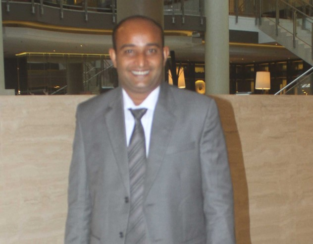

Introduction
My name is Abdul Rahman. I am married and i have 4 kids. I have 6 brothers but no sister. I live in Lh.Hinnavaru, Republic of Maldives. I have more than 18 years of experience in Tourism and Hospitality in various positition. i have travelled some other countries like Germany, Autria, Italy, Turkey, India, Srilanka, Bangkok.
Hobbies
I love to play Football, Volleyball, Badminton, Paddle Tennis. I am good on that sports but I am better in organising, executing and hosting events. I did online lots of online training during pandemic and i am very good 3d architectural drawing and web development. As result i made this portfolio by myself. Graphic Design projects you can see in this portfolio.
I am passionate about my work
I am passionate about my work. Because I love what I do, I have a steady source of motivation that drives me to do my best. In my last job, this passion led me to challenge myself daily and learn new skills that helped me to do better work. For example, I taught myself how to use Photoshop to improve the quality of our photos and graphics. I soon became the go-to person for any design needs.
I am ambitious and driven
I am ambitious and driven. I thrive on challenge and constantly set goals for myself, so I have something to strive toward. I’m not comfortable with settling, and I’m always looking for an opportunity to do better and achieve greatness. In my previous role, I was promoted three times in less than two years
I’m a people-person
I’m a people-person. I love meeting new people and learning about their lives and their backgrounds. I can almost always find common ground with strangers, and I like making people feel comfortable in my presence. I find this skill is especially helpful when kicking off projects with new clients. In my previous job, my clients’ customer satisfaction scores were 15% over the company average